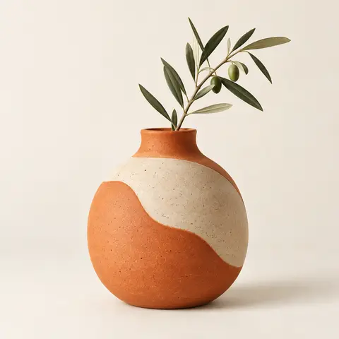
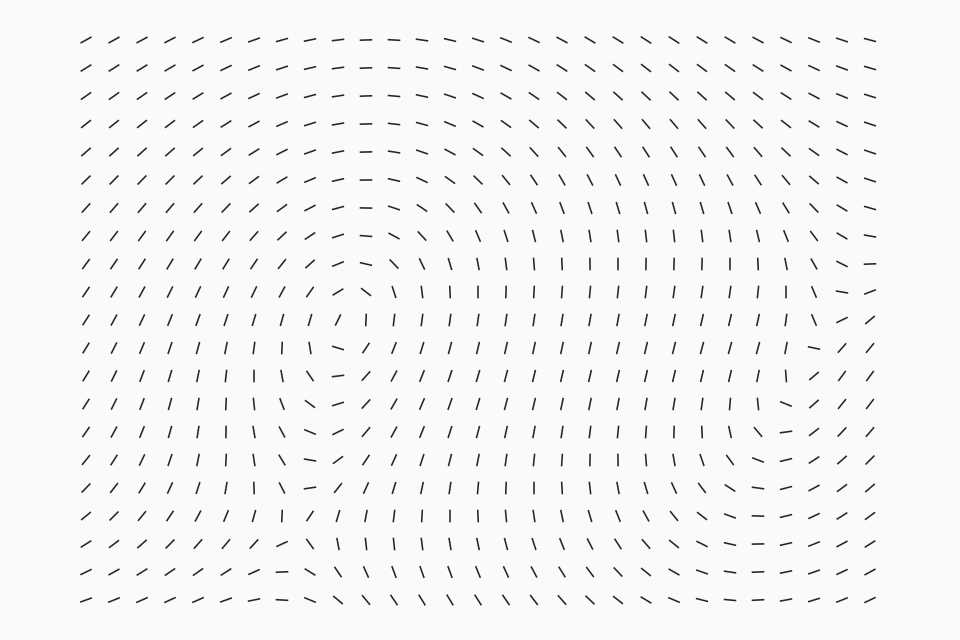
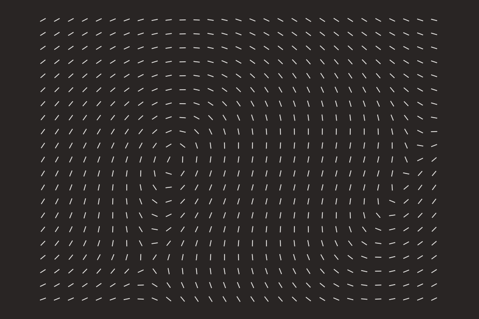
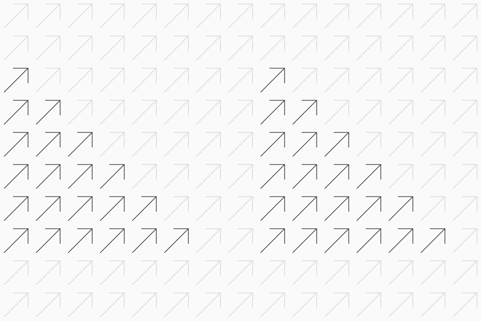
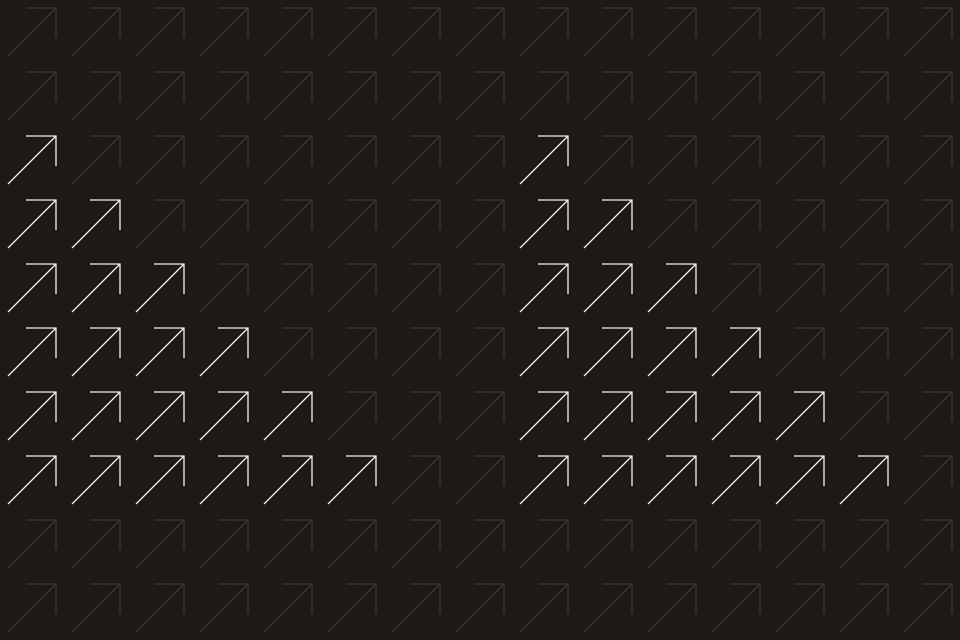

-12%Vaso Terra
R$ 229,90R$ 259,90
Adicionar
Escolha um grupo, ou use a busca (Ctrl K) para ir direto a um componente.
Começar
O kit é um pacote de dois arquivos: convertize.css com tokens, ícones e componentes cz-, e convertize.js com o comportamento e o sprite de ícones. Funciona em qualquer página, sem framework e sem build.
O pacote traz os dois arquivos, uma página inicial pronta (sidebar, busca Ctrl K, tabela, abas, diálogo e toast), o sprite de ícones e um README com todos os atributos, eventos e a API. A versão completa, com os 85 ícones em SVG soltos, está no repositório em design-system/dist/convertize-kit.zip.
Use Inter em toda a interface, incluindo números, e Tenor Sans apenas em títulos editoriais. O script põe o sprite de ícones na página sozinho e liga os componentes ao carregar.
Todo o comportamento vem de atributos (data-open, data-menu-trigger, data-tabs, data-toast...). Para HTML inserido depois, chame Convertize.init(elemento). Para agir no seu código, use a API (Convertize.toast, Convertize.openDialog, Convertize.createCmd, Convertize.theme.set) e ouça os eventos cz:*.
Os tokens já vêm no convertize.css. Para ajustar uma cor ou um raio no seu projeto, redefina o papel depois de carregar o kit. Os componentes leem apenas papéis semânticos (--surface, --text, --accent). Para o tema escuro, redefina os mesmos papéis em [data-theme="dark"].
Cada componente tem uma classe base e modificadores com dois hífens. Estados usam atributos ARIA sempre que existe um equivalente, e classes is- apenas para demonstração.
| Padrão | Exemplo | Quando |
|---|---|---|
| Base | cz-btn | Estilo padrão do componente. |
| Variante | cz-btn--secondary | Mudança de hierarquia ou tom. |
| Tamanho | cz-btn--sm, cz-btn--lg | Densidade da tela. |
| Estado | aria-pressed, aria-invalid, disabled | Sempre que houver um atributo nativo. |
| Parte | cz-card-body, cz-dialog-foot | Regiões internas de um componente. |
aria-label).--accent-text, nunca com #ff5e2c sobre branco.Fundamentos
A paleta combina a escala neutra quente do kit com o laranja Convertize e sete secundárias de apoio. Os componentes nunca usam hex direto: leem papéis semânticos que mudam com o tema.
Clique em qualquer cor para copiar o valor.
Doze passos quentes, do branco ao tinta. Os passos 200 e 300 desenham bordas; 500 e 600 carregam texto secundário.
Para ilustrações, gráficos, avatares e fundos de produto. Nunca em texto ou em ações.
O que os componentes realmente usam. O valor muda quando o tema muda.
| Token | Claro | Escuro | Uso |
|---|---|---|---|
--bg | #fafafa | #0f0d0c | Fundo da página. |
--surface | #ffffff | #1c1917 | Cards, tabelas, diálogos, campos. |
--inset | #f0efed | #0c0a09 | Hover, trilhos, áreas rebaixadas. |
--text | #292524 | #f5f5f5 | Títulos e texto principal. |
--text-2 | #4e4e4e | #d6d3d1 | Parágrafos e descrições. |
--muted | #6f6a63 | #a8a29e | Legendas, placeholders, metadados. |
--line | #e7e5e4 | #3a3532 | Divisores e contornos de superfície. |
--control-line | #c9c4bd | #5a5450 | Contorno de campos e botões secundários (3:1). |
--primary | #292524 | #f0efed | Botão principal, seleção forte. |
--accent | #ff5e2c | #ff5e2c | Foco, indicador ativo, marca. |
--accent-text | #b3401b | #ff8a63 | Links e texto em laranja. |
Cada estado tem cor de texto, fundo e borda. Use sempre os três juntos.
--success--warning--danger--info--accent-text (#b3401b), que passa 5,4:1 sobre branco.Fundamentos
Duas famílias complementares. Tenor Sans dá o tom editorial em títulos; Inter faz o trabalho da interface e de todo dado numérico — navegação, controles, tabelas, preços e números de destaque.
Aa Bb Cc 0123
Uma única espessura. Use tamanho e espaço, nunca negrito falso, para criar hierarquia.
Aa Bb Cc 0123
Números tabulares em tabelas e preços: font-variant-numeric: tabular-nums.
Baseada no texto de 16 px, com saltos de uma quarta justa (1,333) entre títulos.
Venda em todos os canais
Pedidos da semana
Produtos e coleções
Informações de envio
Endereço de entrega
Encontre a informação de que precisa sem sair da tela do pedido.
Rótulos de controle, células de tabela e itens de menu.
Atualizado há 3 minutos por Marina Prado
R$ 42.850,00
tabular-nums.Fundamentos
As escalas vêm do arquivo Figma original. Os passos pequenos aproximam controles relacionados; os grandes separam grupos e dão respiro às superfícies.
Os passos 4, 8, 16 e 24 são os do kit; 12, 32, 48 e 64 estendem a escala para layout de página.
--space-14 px--space-28 px--space-312 px--space-416 px--space-524 px--space-632 px--space-748 px--space-864 pxO raio cresce com o tamanho da superfície. Controles pequenos ficam mais retos; diálogos e capas, mais arredondados.
Aplicado automaticamente no checkout.
Fundamentos
A maior parte da interface é plana e se separa por bordas. A sombra só aparece quando algo flutua sobre o conteúdo: menus, toasts e diálogos.
Cards, tabelas, listas.
var(--hairline) solid --lineSegmento ativo, chips selecionados.
--shadow-1Menus, popovers, cards em hover.
--shadow-2Diálogos, drawers, toasts.
--shadow-3| Camada | z-index | Exemplos |
|---|---|---|
| Conteúdo | 0 | Página, cards, tabelas |
| Fixo | 40 | Barra superior, cabeçalho de tabela |
| Flutuante | 30 | Menus, popovers, tooltips (dentro do contexto do gatilho) |
| Navegação móvel | 60 | Sidebar aberta em telas pequenas |
| Modal | 90 | Diálogos, drawers, folhas inferiores |
| Aviso | 120 | Toasts, sempre acima de tudo |
Fundamentos
A interface usa a biblioteca de ícones Convertize, com cerca de 5 mil ícones servidos pelo jsDelivr. Cada ícone é referenciado pelo link, nunca copiado para o projeto. A sidebar é a exceção: mantém o conjunto desenhado a partir das ilustrações de comércio.
Os nomes disponíveis estão em icons.json. Escolha o que descreve a ação, não a aparência, e use o link https://cdn.jsdelivr.net/gh/izaqueotaviano/icons@main/svg/<nome>.svg. O ícone entra como máscara, então pega a cor do texto em qualquer tema.
Os ícones que os componentes usam, com o nome curto do kit. Clique para copiar o código.
Itens de cz-side-item usam o conjunto desenhado da marca, sólido e com um detalhe que fica laranja no item ativo. Ele vem no sprite do convertize.js e se usa com <use href="#i-nome">.
Fundamentos
Telas de trabalho usam sidebar fixa e conteúdo fluido. O conteúdo se reorganiza em 12, 8 ou 4 colunas conforme a largura, sempre com margem lateral mínima de 16 px.
| Nome | Largura | Colunas | Margem | Navegação |
|---|---|---|---|---|
| Compacto | até 599 px | 4 | 16 px | Navegação inferior |
| Médio | 600 a 979 px | 8 | 24 px | Sidebar em gaveta |
| Expandido | 980 a 1439 px | 12 | 32 px | Sidebar fixa (240 px) |
| Amplo | 1440 px ou mais | 12 | auto, conteúdo até 1280 px | Sidebar fixa |
Fundamentos
O movimento responde a uma ação e mostra o que mudou: um menu abre de onde foi chamado, um toast sobe de onde vai ficar. Nada se mexe sozinho sem motivo.
| Token | Valor | Uso |
|---|---|---|
--dur-1 | 120 ms | Hover, pressionar, trocar cor. |
--dur-2 | 200 ms | Switch, acordeão, recolher sidebar. |
--dur-3 | 320 ms | Diálogos, drawers, toasts entrando. |
--ease | cubic-bezier(.2,.7,.2,1) | Sai rápido e assenta devagar. Única curva do sistema. |
Ações
O botão principal é carvão, não laranja: ele é o mais forte da tela sem competir com a marca. Use uma única ação principal por grupo e deixe as demais como secundárias ou fantasmas.
| Variante | Quando usar |
|---|---|
cz-btn | A ação principal da tela ou do bloco. Uma por grupo. |
--secondary | Ações que acompanham a principal: ver detalhes, exportar, voltar. |
--tonal | Atalhos de barra superior e ferramentas recorrentes, que ficam sempre à vista sem pesar. |
--ghost | Cancelar e ações de baixa ênfase dentro de diálogos e cartões. |
--brand | Campanhas e momentos de marca. Texto carvão sobre laranja: contraste de 5,7:1. |
--danger | Excluir e desfazer algo definitivo; peça confirmação. |
Padrão
Hover
Pressionado
Foco por teclado
Desativado
Carregando
| Classe | Efeito |
|---|---|
cz-btn--secondary | Contorno, fundo transparente. |
cz-btn--ghost | Sem contorno. Ações terciárias. |
cz-btn--brand | Laranja com texto carvão (5,7:1). |
cz-btn--danger | Tom suave; vira sólido no hover. |
cz-btn--danger-solid | Confirmação final de exclusão. |
cz-btn--sm / --lg | 28 px / 44 px de altura (padrão: 36 px). |
cz-btn--block | Ocupa a largura do container. |
is-loading | Spinner no lugar do rótulo, largura mantida. |
Ações
Para ações frequentes e reconhecíveis por ícone: editar, copiar, favoritar, mais opções. Todo botão só com ícone tem rótulo acessível e, no desktop, tooltip.
aria-pressed: ligado usa laranja suaveSó no mobile, para a ação que define a tela (ex.: novo pedido no app do vendedor). Uma por tela.
Ações
O controle segmentado troca a visualização de um mesmo conteúdo. O grupo de botões junta ações irmãs. O botão dividido oferece uma ação padrão e variações.
A parte maior executa a ação mais comum; a seta abre as variações dessa mesma ação. Se as opções forem ações diferentes, use um menu comum.
Ações
No site e nas páginas de campanha, o botão é o próximo passo de quem ainda não é cliente. Ele é maior, em pílula, e o círculo da seta atravessa para o outro lado quando o mouse passa ou o teclado foca. Dentro do painel, use os botões comuns.
A seta diagonal gira para a direita no hover e indica que a pessoa vai avançar. Quando o ícone não é uma seta, use --flat para ele atravessar sem girar.
Para a ação secundária ao lado de um botão do site, ou no fim de um bloco de texto.
<a> quando leva a outra página e <button> quando executa algo.Ações
Links levam a outro lugar; botões fazem algo acontecer. No texto, o link é sublinhado e usa o laranja para texto, que tem contraste suficiente nos dois temas.
Os pedidos pagos por Pix são confirmados em segundos. Veja como acompanhar o status ou fale com o atendimento.
Formulários
Rótulo sempre visível acima do campo, ajuda abaixo quando necessário. O foco troca a borda para laranja com um halo suave; o erro troca para vermelho e explica como corrigir.
Formulários
Use o select nativo para listas curtas e conhecidas. Com mais de 10 opções, ou quando a pessoa sabe o que procura, use o autocompletar com busca.
Formulários
Checkbox para escolhas independentes; radio para uma única escolha entre opções que se excluem. Quando cada opção tem preço ou descrição, use o cartão de opção.
Formulários
Liga e desliga algo que tem efeito imediato, sem botão de salvar. Se a mudança só vale depois de confirmar, use checkbox.
Formulários
Para escolher um valor aproximado dentro de uma faixa: desconto, raio de entrega, preço máximo. Sempre mostre o valor atual ao lado do rótulo.
Formulários
Um botão discreto abre uma paleta com resultados e ações. A pessoa digita, navega com as setas e abre com Enter. Serve para ir direto a um pedido, produto ou cliente sem ocupar espaço na tela com um campo sempre aberto.
Experimente “pedido”, “tema” ou um nome que não existe.
| Tecla | O que faz |
|---|---|
| Ctrl K / ⌘ K | Abre e fecha a busca global da página. |
| ↑ ↓ | Move a seleção entre os resultados. |
| Enter | Abre o resultado selecionado. |
| Esc | Fecha e devolve o foco ao botão que abriu. |
Formulários
Seletor numérico com limites. O botão de diminuir desativa no mínimo, o de aumentar no estoque disponível, e a pessoa também pode digitar.
Formulários
Área de soltar com alternativa por clique. Diga antes quais formatos e tamanhos são aceitos, mostre o progresso de cada arquivo e explique a recusa quando houver.
Formulários
Campo com máscara dd/mm/aaaa e calendário opcional. Para relatórios, o modo de período marca início e fim, com atalhos para intervalos comuns.
Calendário aberto
Formulários
Chips de filtro refinam uma lista na hora. Chips de entrada representam valores digitados, como tags de produto ou e-mails, e podem ser removidos.
Formulários
Valide ao sair do campo e novamente ao enviar. Erros ficam junto do campo, dizem o que fazer e o foco vai para o primeiro problema. Tente enviar o formulário vazio.
Navegação
Fixa no topo, com o título da tela ou a busca global à esquerda e as ações de conta à direita. Em telas pequenas, o botão de menu abre a sidebar em gaveta.
Navegação
Navegação, conversas recentes e seletor de conta, nos estados expandido e recolhido. Use o botão ao lado do logo para recolher ou expandir; no celular ela já começa recolhida.
Clique nos itens: a área de conteúdo mostra a página escolhida.
A mesma sidebar organiza a navegação do lojista, com contador de pedidos e seção de canais.
Do pacote React do kit. Use quando a interface inteira for clara e a navegação precisar de mais contraste; o ícone ativo ganha o laranja.
Navegação
Separam conteúdos do mesmo nível dentro de uma página. O indicador laranja marca a aba ativa; as setas do teclado movem entre elas.
Navegação
Mostra onde a tela está na hierarquia e permite voltar um ou mais níveis. Use a partir do terceiro nível; o último item é a página atual e não é link.
Navegação
Para listas longas com posição estável, como pedidos e produtos. Mostre o intervalo exibido e o total; reticências resumem páginas intermediárias.
Navegação
Para fluxos com ordem fixa, como checkout, cadastro da loja ou importação de catálogo. Mostram o que foi feito, onde a pessoa está e o que falta.
Navegação
No app mobile, de três a cinco destinos principais ficam ao alcance do polegar. Quando um destino precisa de uma ação rápida em vez de uma tela nova, o botão expande um painel curto por cima da barra, sem sair de onde a pessoa está.
Toque em um ícone: o painel cresce a partir da barra com o tamanho do conteúdo, e troca de forma suave ao mudar de destino. Toque fora, aperte Esc ou toque no mesmo ícone para fechar. O item Tema já troca o tema desta própria documentação.
Pedidos
Quando todos os destinos têm tela própria, a barra de abas resolve sozinha — sem painel, sem estado aberto ou fechado.
Pedidos
Navegação
Lista de ações que abre a partir de um botão. Agrupe por afinidade, mostre atalhos quando existirem e deixe ações destrutivas por último, separadas.
Aberto
Feedback
Alertas ficam no conteúdo, perto do que descrevem, e só saem quando o problema é resolvido ou a pessoa fecha. Banners avisam algo que vale para a conta inteira.
Mensagens rápidas para listas e painéis. O kit original traz oito estados:
Feedback
Confirmam uma ação que acabou de acontecer e somem sozinhos em 5 segundos. Quando a ação pode ser revertida, ofereça “Desfazer” e mantenha o toast por mais tempo.
Feedback
Mostre progresso determinado quando souber quanto falta; spinner para esperas curtas; skeleton quando a estrutura da tela já é conhecida.
Feedback
Uma tela vazia é um convite para agir. Diga o que vai aparecer ali e ofereça o primeiro passo. No erro, diga o que aconteceu e como sair dele.
Cadastre um produto ou importe uma planilha com todos de uma vez.
Nada corresponde a “Brito” com o status Em trânsito. Tente outro termo ou limpe os filtros.
A integração respondeu com erro 503. Seus pedidos estão seguros; tentaremos de novo em 5 minutos.
Os 12 pedidos pagos já têm etiqueta. Os próximos aparecem aqui assim que forem aprovados.
Feedback
Badges resumem um estado em uma ou duas palavras. Status sempre combina cor e texto, nunca só a cor.
Feedback
O tooltip nomeia um controle e aparece no hover e no foco. O popover abre no clique e pode ter conteúdo e ações; fecha com Esc ou clicando fora.
O SKU identifica cada variação no estoque. Use letras, números e hífens, como FRM-002-AZ.
Sobreposições
Interrompe a tela para uma tarefa curta e focada. O foco entra no diálogo, fica preso nele e volta ao botão de origem ao fechar. Esc e o botão de fechar sempre funcionam.
O cupom vale para toda a loja até a data de término.
Sobreposições
Antes de algo que não tem volta, diga exatamente o que será perdido. Para exclusões grandes, peça que a pessoa digite o nome do item: o botão só libera quando confere.
catalogo-forma.pdf será removido de 3 produtos e da conversa com o cliente. Essa ação não pode ser desfeita.
Sobreposições
Painel que desliza da direita para detalhes, filtros ou edição rápida sem perder o contexto da lista por trás.
Sobreposições
No mobile, substitui menus e diálogos pequenos. Sobe da borda inferior, tem alça para arrastar e fica ao alcance do polegar.
Pedido #CV-2048
Eriton Muniz · R$ 318,70
O catálogo Coleção Verão e seus 48 produtos serão excluídos. Pedidos antigos continuam no histórico. Essa ação não pode ser desfeita.
As mudanças no preço e na descrição do Vaso Terra serão perdidas.
Dados
Agrupam conteúdo sobre um mesmo assunto. O card padrão é plano com borda; a sombra fica para o card elevado que precisa se destacar, e o escuro para um único destaque por tela.
Estoque único entre site, marketplace e balcão.
Gere etiquetas e notas assim que o pagamento for aprovado.
Marketplaces, nota fiscal automática e relatórios completos.
R$ 249/mês
Objetos, ideias e curadoria para casa.
Produtos com três fotos ou mais vendem até 2 vezes mais no marketplace.
R$ 42.850
12,4% sobre o mês anterior
Dados
A tabela de produtos do kit, completa: busca em paleta, filtros, ordenação por coluna, seleção e paginação. Ao selecionar produtos, uma barra flutuante reúne as ações em massa do catálogo. Tudo abaixo funciona com os dados de exemplo.
| Status | Ações |
|---|
Tente outro termo ou limpe os filtros.
Aparece ao selecionar uma ou mais linhas e fica presa ao pé da tela enquanto a pessoa rola a lista. Mostra quantos itens estão selecionados, oferece selecionar todos os resultados do filtro e reúne as ações que valem para vários produtos de uma vez. Esc ou o botão de fechar limpam a seleção.
| Ação | O que faz |
|---|---|
| Ajustar preço | Aumenta ou reduz o preço em percentual, com prévia antes de aplicar. |
| Publicar no marketplace | Envia os anúncios para os canais conectados. |
| Exportar | Gera um CSV só com os itens selecionados. |
| Mais | Adicionar à promoção, imprimir etiquetas de código de barras, pausar vendas e duplicar. |
| Excluir | Remove da lista na hora, com “Desfazer” no aviso por 8 segundos. |
Deixe visíveis até quatro ações, as mais usadas naquela lista; o resto vai para “Mais”. Excluir fica sempre por último, separado pela cor. Em telas estreitas os rótulos somem e ficam só os ícones, com o nome no título.
Dados
Linhas com elemento à esquerda, texto em duas linhas e ação à direita. Serve para arquivos, conectores, contas e qualquer coleção sem colunas comparáveis.
Configurações de linha
Seletor de conta
Dados
O número vem primeiro, em Inter com peso 600 e dígitos tabulares; a variação diz a direção com seta, cor e texto. Gráficos usam laranja para a série principal e carvão para a comparação.
O número vem em primeiro plano; o gráfico dos últimos dias sangra por trás, esmaecendo perto do texto. Passe o mouse sobre o gráfico para ver o valor de cada dia; os botões trocam o período e a forma do gráfico.
Para uma linha densa de indicadores, sem interação — o número, a variação e um traço do período.
Dados
Pessoas são redondas; lojas e empresas, quadradas com cantos suaves. Sem foto, use as iniciais sobre uma das secundárias da marca.
Dados
Esconde detalhes que só parte das pessoas precisa, como perguntas frequentes e configurações avançadas. O título diz exatamente o que há dentro.
Dados
Histórico de eventos em ordem, do mais antigo ao mais recente: rastreio de pedidos, atividade de um ticket, alterações em um produto.
Dados
Cartão de arquivo com dobra discreta, símbolo do tipo no centro e faixa com a extensão. O símbolo diz o que o arquivo é (imagem, planilha, vídeo) e a cor da faixa ajuda a achar o formato numa lista.
Dados
Divisores separam grupos quando o espaço sozinho não basta. Teclas de atalho aparecem em menus e na ajuda.
Endereço de cobrança
Endereço de entrega
Abra a busca com Ctrl K e feche com Esc.
Comércio
O card da vitrine: imagem quadrada sobre fundo Oat, nome, avaliação e preço com parcelamento. Selos ficam no canto da imagem, e o favorito sempre no mesmo lugar.
Comércio
Seletores de cor e tamanho para a página de produto, com a variação indisponível riscada mas visível. A avaliação por estrelas aceita teclado e diz a nota em texto.
Cerâmica · FRM-002
Comércio
Linhas de carrinho com quantidade editável e um resumo que recalcula na hora. Experimente mudar as quantidades e aplicar o cupom CONVERTIZE10.
Comércio
Etapas, cartões de opção e resumo fixo compõem o checkout de uma página. A forma de pagamento escolhida revela só os campos que ela precisa.
Eriton Muniz · Rua Harmonia, 118, ap. 42 · São Paulo, SP · 05435-000
Expressa, chega amanhãComércio
Tela de acompanhamento para quem comprou: o estado atual em destaque, a previsão em linguagem simples e o histórico logo abaixo.
Chega amanhã, até as 18h
Comércio
Order tracking: as etapas do pedido em coluna, da compra à entrega. Etapas concluídas ganham o check; a data e a hora ficam logo abaixo do nome, e o que ainda não aconteceu aparece como pendente.
| Parte | Medida |
|---|---|
| Círculo | 26 px, contorno de 2,5 px em cinza; o check aparece só em li.is-done. |
| Linha | 2 px, da mesma cor do contorno, ligando um círculo ao próximo. |
| Etapa | Nome em Inter 500 de 17 px; data e hora no mesmo tamanho, em cinza, com números tabulares. |
| Espaço | 16 px entre círculo e texto, 34 px entre etapas. |
<ol> e use <time datetime> nas datas.Comércio
Cartões de navegação para os segmentos da Convertize (B2C, B2B, Marketplace, Multiloja e Aplicativo), com os ícones do site. O cartão escolhido ganha o contorno laranja e atualiza a descrição.
Soluções Convertize
Crie uma experiência de compra moderna e de alta performance, integrada à sua operação física com estoque unificado, Clique e Retire, Ship from Store, multidocas e preços sincronizados em tempo real.
Explorar soluçãoAtendimento
Mensagens, anexos, chamadas de ferramenta e o composer com seus estados. As mensagens de quem atende ficam à direita, em laranja suave. Escreva uma mensagem abaixo para ver a resposta chegando.
Composer · em repouso
Composer · respondendo
Digitando
Chamada de ferramenta concluída
Controles de resposta
Sugestões de início
Atendimento
O padrão completo do kit: contexto do cliente à esquerda, conversa ao centro e ações de resolução no cabeçalho.
Padrões de tela
A primeira tela do lojista: quanto vendeu, como está a conversão e o que precisa de ação agora. Troque o período e passe o mouse pelos gráficos; tudo aqui é montado com componentes do kit.
Quinta, 24 de setembro, 14h02
Sidebar do kit (cz-sidebar, recolhe para o rail de 52 px), botões tonais pequenos na barra superior, controle segmentado para o período, alerta informativo, cartões de métrica com cz-delta, gráficos com crosshair e a busca (cz-cmd).
Padrões de tela
Uma tela densa em arquivos pede uma sidebar mais discreta: rail de 52px, só ícones, com divisória sutil por pseudo-elemento em vez de borda. Abas, busca, favoritos e alternância de visualização ficam numa barra compacta de 32px.
Envie fotos de produto, banners e vídeos para usar em páginas e campanhas.
Marcadores
Padrões de tela
A tela de acesso usa a imagem escultórica da marca de um lado e um formulário curto do outro. Em telas pequenas, a imagem vira faixa no topo.
Seu comércio inteiro, em um só lugar.
Padrões de tela
O app do vendedor usa os mesmos componentes em alvos maiores: barra superior simples, cards empilhados e navegação inferior.
R$ 3.184
vendidos hoje · 18 pedidos
Vaso Terra tem 2 unidades.
Marca
O logotipo oficial combina o símbolo em laranja #ff5e2c com o nome em carvão. Em fundos escuros, use a versão branca ou, sobre preto, o símbolo laranja com o nome em branco; em espaços compactos, apenas o símbolo.
Marca
A iconografia da marca em carvão, laranja e branco, os patterns e o fundo de barras: o material para capas, apresentações, site e campanhas.
Barras em gradiente de laranja para transparente sobre preto, mais altas nas bordas, pulsando em sequência. Serve para capas, telas de entrada e momentos de campanha, com texto branco por cima. Com movimento reduzido ativado, as barras ficam paradas.
Oito ícones de traço único, com cortes retos e pontas arredondadas, desenhados para peças da marca: capas, apresentações, site e campanhas. Use a partir de 48 px, em carvão ou laranja no claro e em branco ou laranja no escuro. Na interface do produto, use os ícones da biblioteca (veja Iconografia).
Dois patterns, cada um em versão clara e escura. Fluxo, de traços finos, dá textura a fundos de apresentação e site sem competir com o texto. Setas, em grade de traço fino, marca capas e momentos de crescimento.




Marca
Material, humana e clara. A fita laranja, o vidro translúcido, a pedra clara e a luz natural ligam as imagens abstratas, as cenas com pessoas e as apresentações da interface.
Linguagem principal. Capas, campanhas e momentos de marca.
Quem vende, cria e compra, em gestos reais e luz natural.
Operação acontecendo. O elemento escultórico aparece como elo, sem competir.
Planos e linhas de baixo contraste para dar profundidade a capturas de tela.
Ponto de partida para gerar novas imagens. Troque só o assunto, o enquadramento e o formato.